How to run SDL3 app on Web with WebAssembly on Windows
I will show how to run the sdl3-sample example on Web with WebAssembly on Windows. You should have MinGW installed. Try to check if MinGW is in the Path. So type in CMD: mingw32-make -v
Please, ask your questions in my topic
1. Download and install emsdk
- Run CMD on C drive
- Copy and execute the following command to download emsdk on your C drive: git clone https://github.com/emscripten-core/emsdk.git
- Go to the downloaded folder using CMD: cd emsdk
- Install the specific version of emsdk: emsdk install 3.1.37
- Activate a new version: emsdk activate 3.1.37
2. Download and run SDL3 example
- Run CMD in a project folder where you want to download the example
- Copy and execute the following command to download the example: git clone https://github.com/Ravbug/sdl3-sample --depth=1 --recurse-submodules
- The source code of the example is here: 'sdl3-sample\src\main.cpp' It just shows a background color
- Open 'C:\emsdk' and run 'emcmdprompt.bat' by double click: 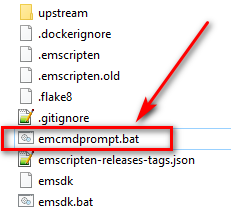
- You will see this prompt: 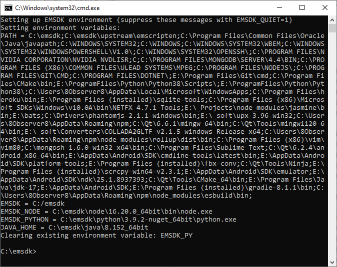
- Go to the 'sdl3-sample\config' folder: 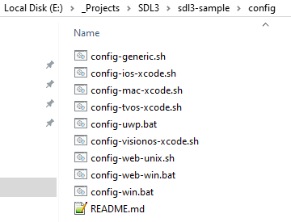
- using this prompt, for example: 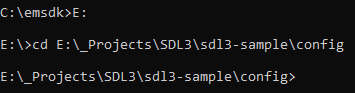
- Type the following command in the prompt: config-web-win
- Wait for a few minutes. It takes 12 minutes on my laptop. You should make it only once
- Open CMD in the 'sdl3-sample\build\web' and type this command: mingw32-make
- Wait for a few minutes. It takes 3 minutes on my laptop. You should make it every time when you change a source code in the 'sdl3-sample\src\main.cpp' fle. But it will take a few seconds
- Three files will be generated that you can distributed: 'sdl-min.html', 'sdl-min.js', and 'sdl-min.wasm': 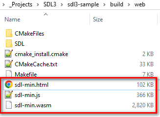
3. Distribute your builds on the free 'www.netlify.com' hosting
- Create a new folder inside of 'sdl3-sample\build\web' and copy the generated files to this filder: 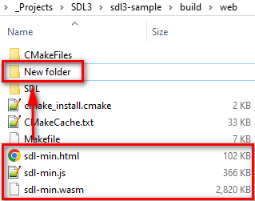
- Rename 'sdl-min.html' to 'index.html': 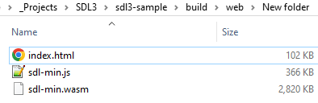
- Go to the free hosting and log in with GitHub (or just make a registration): https://www.netlify.com/ 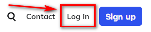
- It is possible to deploy from existing repository but we will deploy manually
- Selet on the right side: 'Add new site' > 'Deploy manually': 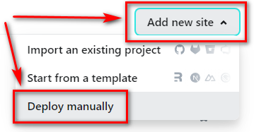
- Press 'browse to upload':
- Selecte a 'New folder' and press 'Upload': 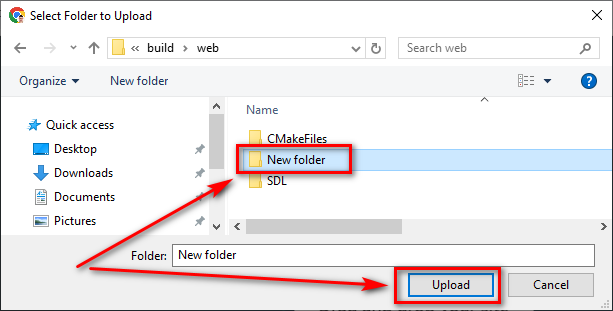
- Press 'Upload' again: 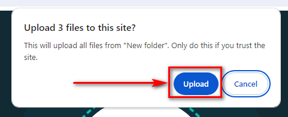
- Press 'Open production deploy' to open your web application: 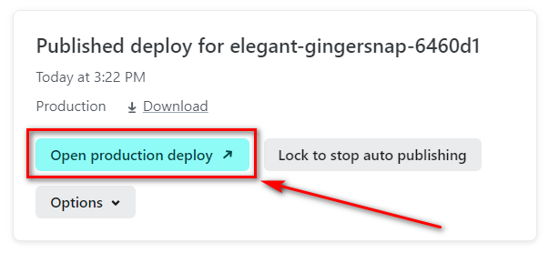
- Now you can copy a link to distribute it on forums/social networks/discord and so on: 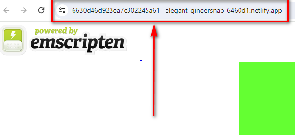
- If you want to make this link shorter you can google 'shorten url'
- If you want to deploy again you can press 'Deploys' on the left side to refresh the page: 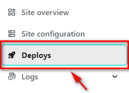
- And you can see 'browse to upload' when you scroll the page down: 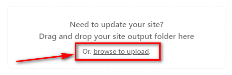
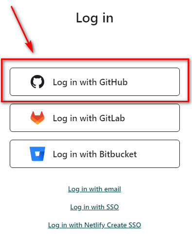

Support me: https://8observer8.github.io/donate.html